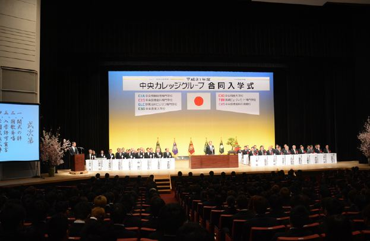
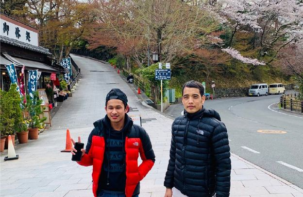
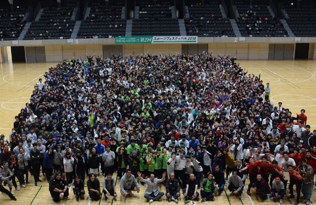

読む・書く・話す・聞くの4技能を総合的に学び、すべての課程を修了すると、語彙10,000語・漢字2,000字を身につけます。専門学校や大学の授業を受けるのに困らない日本語のレベルに届きます。
中央情報大学校は7つの専門学校からなる「中央カレッジグループ」の一員です。修了後は、医療・福祉・ビジネス・観光・経理・IT・デザイン・アニメ・まんが・農業などの専門学校への編入もできます。
4つの特長
クラス担任制で、進み具合と適性に合わせて指導／学校法人なので学生割引などの特典がある／日本人学生との交流が多く、日本文化に触れやすい／グループの専門学校へ進むとき、入学金などの減免がある
授業の時間
午前クラス（9:20〜12:30）と午後クラス（13:20〜16:50）に分かれています。土曜日・日曜日は原則お休みです。